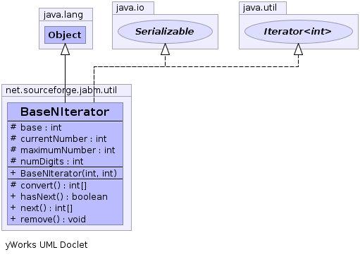

net.sourceforge.jabm.util
Class BaseNIterator
java.lang.Object
 net.sourceforge.jabm.util.BaseNIterator
net.sourceforge.jabm.util.BaseNIterator
- All Implemented Interfaces:
- java.io.Serializable, java.util.Iterator<int[]>
public class BaseNIterator
- extends java.lang.Object
- implements java.util.Iterator<int[]>, java.io.Serializable
An iterator that enumerates the base N representation of every non-negative
integer that can be represented within the specified number of digits.
- See Also:
- Serialized Form
-
-

| Methods inherited from class java.lang.Object |
clone, equals, finalize, getClass, hashCode, notify, notifyAll, toString, wait, wait, wait |
currentNumber
protected int currentNumber
base
protected int base
numDigits
protected int numDigits
maximumNumber
protected int maximumNumber
BaseNIterator
public BaseNIterator(int base,
int numDigits)
next
public int[] next()
- Specified by:
next in interface java.util.Iterator<int[]>
hasNext
public boolean hasNext()
- Specified by:
hasNext in interface java.util.Iterator<int[]>
remove
public void remove()
- Specified by:
remove in interface java.util.Iterator<int[]>
convert
protected int[] convert()